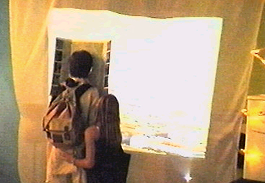

| 
SHIFZ Abtlg. f. Neuro-Touristik |
.......................... ÜBER WIEN GONDELN
Die neuronale Wien-Führung in einer dem Wiener Riesenrad nachempfundenen Gondelkonstruktion
ermöglicht jeder/jedem Gondelreisenden eine individuelle, durch die eigenen Gehirnströme beeinflusste "Führung" durch die Stadt.
Durch das Pressen der Stirn gegen einen mit Elektroden besetzten Stadtplan Wiens werden die werden Impulse des/der
Riesenrad-Reisenden erfasst. Die Werte lösen eine Abruf-Reihenfolge und Zusammenstellung von Ton- und Videofragmenten aus. Jedem Besucher wird - einem physischen Wien-Besuch nicht unähnlich - eine individuelle "Sicht" der Stadt zuteil.
Die Sound-Samples setzen sich zum Teil aus „typischen Geräuschen“ Wiens (Fiakerpferdegetrappel, Kaffeetassen, ...), und aus Wortspenden von "originalen" Wienern und von Touristen zusammen.
|